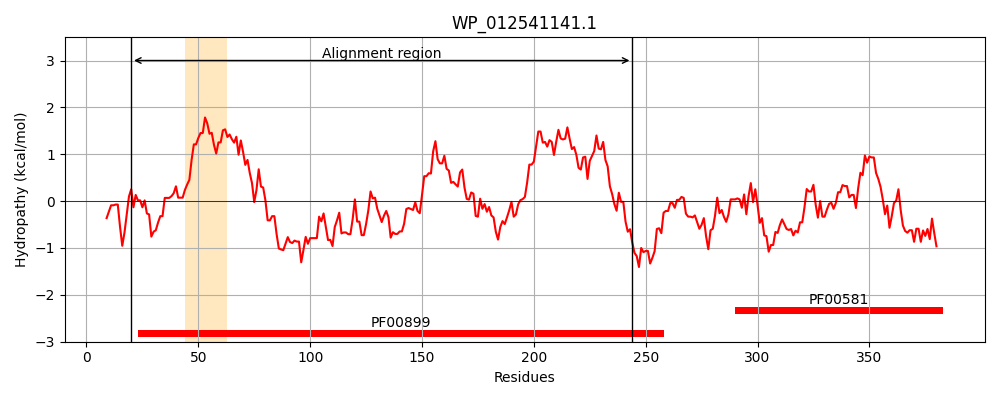
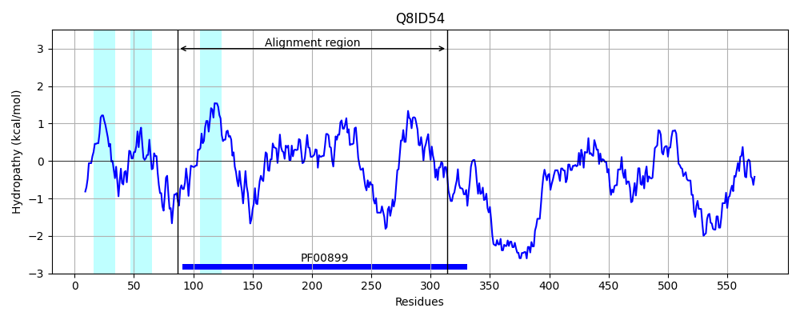
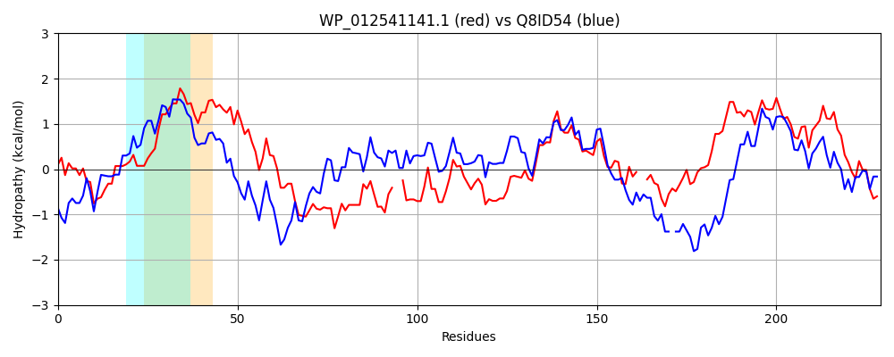

Hit Accession: Q8ID54
Hit TCID: 3.A.25.2.1
Hit Description: gnl|BL_ORD_ID|16318 gnl|TC-DB|Q8ID54|3.A.25.2.1 UBA/THIF-type NAD/FAD binding protein, putative OS=Plasmodium falciparum (isolate 3D7) GN=PF13_0344 PE=4 SV=1
Mach Len: 229
e:0.000000
Query TMS Count : 1
Hit TMS Count: 3
TMS-Overlap Score: 0.700000
Predicted Substrates:CHEBI:16670;peptide
BLAST Alignment:
Score: 358 , Bit scores: 142 bits, E-value: 1.5e-37, Alignment length: 229, Percentage identity: 36
Query: 20 IARYSRHLLLPEVGLEGQKRLKAARVLLIGTGGLGAPVALYLAAAGVGKLGIVDFDFVDISNLQRQIIHSTKDINRPKVASAKDKIKAINPEIQ--VETYNTTLSSKNALEIIREYDLVVDGTDNYPTRYLINDACVLLGKPLVYGSIFQFEGQASVFYAGQ--GPCYRCLYPEPPPPGLVPSCAEGGVVGVLPGIIGTIQAAEAIKLIVGGSESLIGRLLLFDVWQMK 244
I R+ + L + ++ + ++ ++L+IG GGLG+PV LYL+ G ++G+VD D V+ SNL RQIIH K I K SAK +K ++ + ++ Y L N + II+EYD+++D TDN TR+LIND C+L K L++ S GQ +V+ CYRCL C E G++ + G+IG +QA E IKL +G + ++ L ++ + K
Sbjct: 87 IDRHGKLLNIYDIPHDSLYKIFNTKILIIGLGGLGSPVCLYLSKFGFKEIGLVDGDKVEKSNLHRQIIHKEKYIGLNKCISAKLFLKDMDVHVSDCIKCYPFFLDKLNGINIIKEYDIIIDCTDNISTRFLINDLCILYKKKLIFASALGIYGQVNVYNLNNNTSSCYRCL-KSFNNHSQNNDCDENGILSTVTGVIGLLQANEVIKLSIGLDQDVLTNFLTYNSFSNK 314 | Protein Hydropathy Plots: |
|---|
|  |  |
Pairwise Alignment-Hydropathy Plot:
|
|---|
|  |